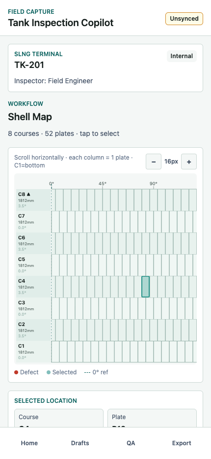
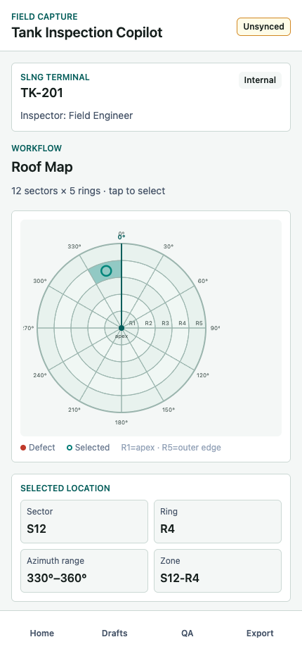
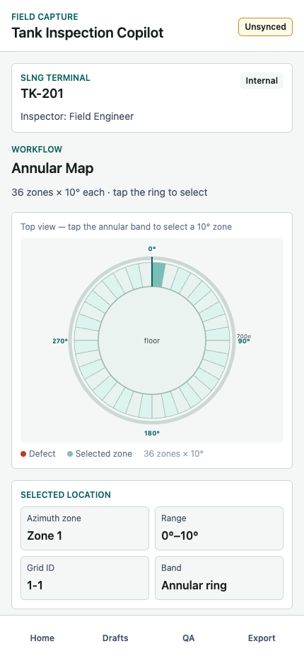
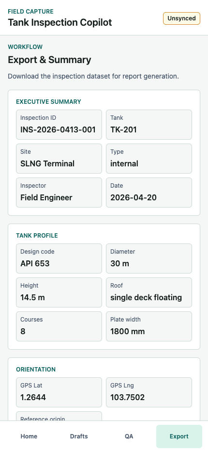

Shell: course and plate map
Define course count, plate width, seam origin, and offset rules, then capture defects by course, plate, azimuth, elevation, and weld context.
Surface geometry focus · API 653 field capture
Mobile-first inspection workflow for geometry-aware defect capture across the shell, roof, and annular ring. Inspectors can locate findings on course-by-plate shell maps, polar roof sectors, and 10 degree annular zones before evidence, QA, and export.
Define course count, plate width, seam origin, and offset rules, then capture defects by course, plate, azimuth, elevation, and weld context.
Split the roof into angular sectors and radial rings so every finding has a repeatable sector, ring, azimuth range, and zone identifier.
Capture the critical annular inspection band as 36 ten-degree zones around the floor edge, aligned to the same tank orientation reference.
Each defect links type, severity, measurements, notes, photos, surface position, QA warnings, and report-ready JSON/CSV export.
Customer walkthrough flow



